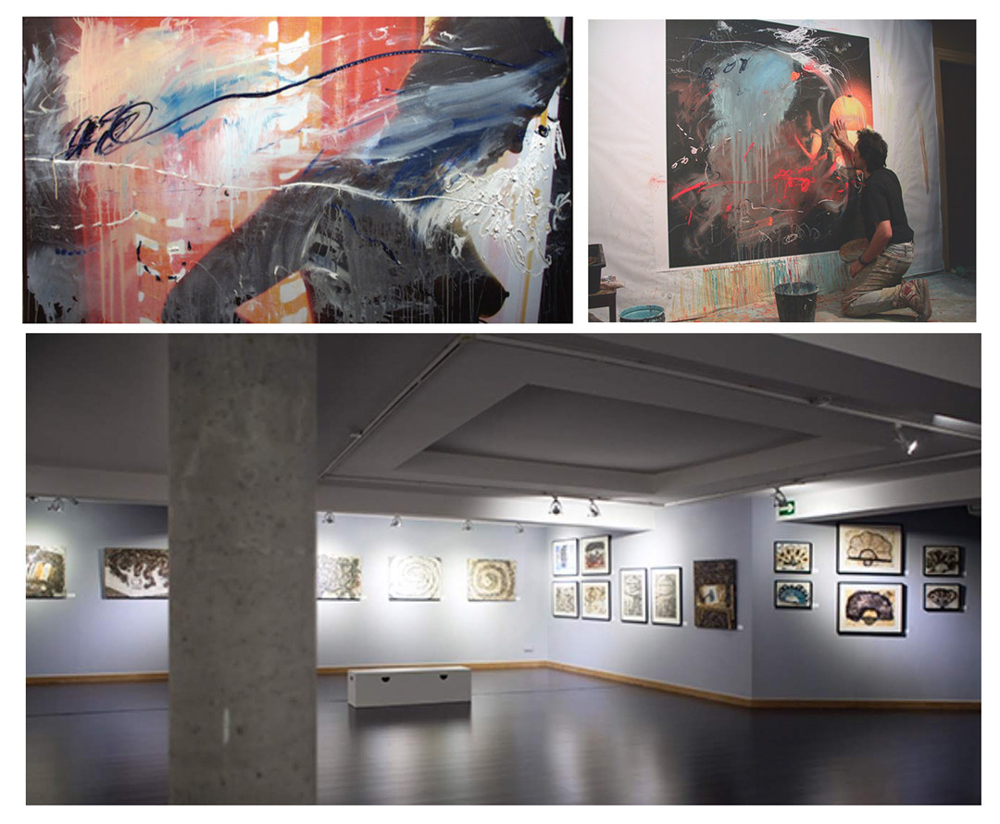

Últimas noticias
Exposición individual en el Museo de la Ciudad de Móstoles.
Seleccionado convocatoria de espacios expositivos 2020. Con el proyecto: Revisitando Intimidad.
La serie de pinturas y dibujos Intimidad comienza con algo tan sencillo como unas fotografías personales. Hace casi veinte años. Y continúa hasta la actualidad. Una serie de instantáneas de vivencias personales intimas, relacionadas con la vida cotidiana que utilizo desde entonces a modo de soporte pictórico.
Así, las fotografías se cubren de trazos de pintura, colores, texturas y pinceladas con líneas gruesas y delgadas, largas y cortas…las imágenes que un día tuvieron identidad propia pasaron a convivir con una abstracción. Lo que en un comienzo no fueron sino bocetos e ideas trazadas a modo de preparación, se convierten a la postre, en una obra por sí misma, sólida y reveladora: mi intimidad.
Exposición individual: Lo Invisible. Pinturas sobre música.
Del 16 de noviembre al 8 de diciembre de 2018 la Galería Gaudí de Madrid abre sus puertas a la exposición individual de Arturo. Cerca de 50 obras (lienzos de todos los formatos, dibujos y collages) componen esta muestra de trabajos realizados durante los últimos diez años por el pintor madrileño.
Basados en la música de Schoenberg, Bruch y en su mayor parte del compositor francés Olivier Messiaen, los cuadros buscan un acercamiento gestual a la música, tan salvaje como reflexivo, que invita al espectador a disfrutar de emociones y experiencias cercanas a la pura sensación física y sonora del hecho musical.
Más noticias.
Escenografía
Arturo ha realizado la escenografía de múltiples obras durante más de tres décadas, incluyendo El triángulo azul por la que recibió el premio MAX 2015.
Más escenografía.
Pintura
Con más de 20 exposiciones individuales y un centenar colectivas, son casi 40 años de trabajo en la pintura, en el territorio del expresionismo. A veces abstracto, a veces fotográfico u objetual, pero siempre buscando acercarse al gesto puro, a la expresión vital y contundente de emociones humanas.
Puedes visitar parte de su obra pictórica.
Acerca de Arturo Martín Burgos
Licenciado en Bellas Artes por la Universidad Complutense de Madrid en 1985. Profesor de Pintura en la Universidad Popular de Alcobendas.
Artista polifacético con una extensa y prolífica obra, no ha dejado ninguna de las facetas de las artes plásticas por trabajar.
Puedes consultar su biografía.